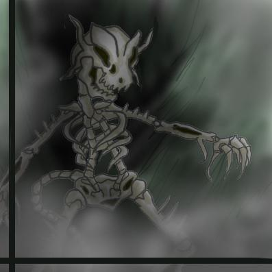
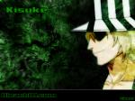
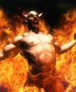

Forums galactiques > Assemblée Galactique : diplomatie officielle > Présentations
| Le Sage Shiridar Respect diplomatique : 19  16/05 ETU 19:55 | Score : 2 Détails Je me nomme Le Sage Shiridar, fin adorateur de la sagesse.
Ma devise est: "Parce que toujours, parce que partout, parce que pour tous" Parce que toujours la sagesse existera, parce que partout elle sera, parce que pour tous elle vivra. J'aime notamment transmettre la sagesse par la parole. Je ne m'engage dans aucunes guerres, je ne m'engage dans aucuns conflits. | ||
| Lalie Pink Respect diplomatique : 340  16/05 ETU 19:59 | Score : 5 Détails Je me nomme Lalie Pink, membre de l'ordre de la Rose de Sang.
Je ne dirige qu'un empire encore restreint, mais ne comptez pas sur moi pour en restez là. Ma devise : "rien n'est plus mou que l'eau, mais vous pouvez comptez sur elle pour balayer les plus grands ouvrages." Côté caractère : fanatique en ce qui concerne mes idées (je suis royaliste entre autres), je suis aussi un brin schizophrène. Respectueusement, L.P | ||
| Siklariis Respect diplomatique : 99  16/05 ETU 22:33 | Score : 6 Détails * Un homme s'avança dans l'Assemblée. Il portait un grand manteau noir et bleu.
Il parcouru les commandants du regard. Certains, en le considérant pouvaient reconnaitre Siklariis Tahl. Il avait effectivement survécu. Son visage semblé cependant plus marqué et son regard plus perçant. L'apocalypse avait laissé des traces, une cicatrice parcourait la moitié du côté de son visage. Mais en lisant plus loin dans ses yeux, on pouvait voir qu'il avait muri. * Commandants, Je tiens à me présenter à ceux qui ne me connaissent pas. Je me nomme Siklariis Tahl. Cette galaxie nouvelle acueillera beaucoup de nouveau sang. J'ai connu la période avant la renaissance de cette galaxie et il est temps pour moi de faire un nouveau départ. Cela est évidemment valable pour tout le monde et permettra -je l'éspère- de choisir une voie commune. Cette galaxie qui vient de naitre doit permettre selon moi d'acueillir tout le monde et de leur permettre d'y vivre. Mes idées sont basées sur ce principe. Désormais à vous de faire vos choix, c'est le plus important et un premier pas vers l'harmonie qui permettra un jour à tous de vivre sans que les choix d'un autre ne porte préjudice à ses propres buts. Désormais, que tout recommence. Apprenez du passé comme j'ai voulu le faire et évoluez. Suivez-votre but, mais regardez autour de vous. Merci de m'avoir écouté ; Siklariis Tahl. | ||
| Cassandra Respect diplomatique : 316  16/05 ETU 22:33  | Score : 2 Détails Je reprend donc mon récit là où je l’avais laissé.
Ma tante toujours tournée devant la fenêtre_ Ce n’est pas possible, ils nous ont dit qu’il était mort… Je la regardait, j’était surprise et effrayée par tous se qui venait de se passer. Ma Tante décida alors de décrocher de la fenêtre et m’invita à me rasseoir. Tous cela ma bouleversée et plein de question me viennent à l’esprit. Moi_ Tu as reconnu sa voix, qui était-ce ? Ma Tante_ Je ne l’explique pas… pourtant… Moi_ QUI ETAIT-CE ??? Ma Tante_ Calme toi! « Elle souffla pour évacuer le stresse et la pression » Bon, tu te rappel de ton père, il travaillait pour l’armée fédérale, mais il y a environ 12-15ans les généraux nous appris sa disparitions… Moi_ Oui je m’en souviens, mais quel est le rapport? Ma Tante_ Cette…objet «dit-elle en montrant le petit drone argenté » prouve qu’il est encore en vie, du moins qu’il l’ai encore mais plus pour longtemps d’après se qu’il a dit! Moi_ Mon père…en vie… Un silence régnait alors dans la pièce. Pendant plusieurs minutes nous nous regardâmes avec ma Tante, toutes deux immobilisées par le chocs. Puis je rompis le silence : _Depuis tous ce temps… Je me levai d’un coup, furieuse! Ma Tante_ Qu’es que tu fait Cassandra? Je ne répondis pas. J’attrapai le robot posé sur la table et monta dans ma chambre, faire mon sac. Ma Tante me suivit dans ma chambre, me regardant faire mon sac… Ma Tante_ Mais qu’es que tu compte faire? Pour l’amour de Dieu répond moi? Moi_ Je veux savoir se qui est arrivé à mon père! «ma voix était devenu rauque du faite de l’émotion » Ma Tante_ Ne fais pas idiote ! C’est l’armée!!! Moi_ JE VEUX SAVOIR SE QUI EST ARRIVE A MON PERE !!! Ma mère sortit de la chambre, vexée, démoralisée par la situation et la tournure quelle prenais. Je m’arrêtai quelques secondes, que venais-je de faire? Pourquoi je me suis laissée emportée par mes émotions? Le faite de pouvoir retrouver mon père…… Puis je fini de faire mon sac, et redescendit les escaliers, le robot sous le bras. Ma Tante m’attendait en bas de l’escalier, avec une boite. Ma Tante_ Tu pars pour la base ETA XIII je suis pose? Prends ç alors «elle ouvrit la boite et en sortit une petites bourses et un coffret en velours, à la vue de celui ci je lança à ma Tante un regard interrogateur ». Ouvre le ! Je ouvrit le petit coffret, une médaille y était déposée. Ma Tante_ La médaille du mérite et de la reconnaissance de ton père. Je suis restée bouche bée, puis je pris ma Tante dans mes bras. Moi_ Merci Tatie, merci ! Ma tante_ Prends ça? Si tu as besoin d’aides pour n’importe quoi appel ce numéro, ok ? Je fis un signe de tête, la resserra encore un fois dans mes bras et je sortit de la maison, accompagnée du drone. …La suite prochainement… | ||
| Ptitdevil Respect diplomatique : 11  17/05 ETU 00:32 | Score : 4 Détails "Ptitdevil se leva et décida de se présenter, son long manteau noir s'ouvrir legèrement, laissant apparaitre sa musculature plutôt imposante.
Il fit un signe de la tête en direction des commandants qui l'avaient reconnu." Je m'adresse à vous Commandant de la galaxie, je me présente Commandant Ptitdevil, issu d'une famille de guerrier et qui suivant l'exemple de son père décida de vouer sa vie a la protection des siens et de ses alliées. Bien que mes racines ne sois pas des plus pacifistes, cela ne m'a pas empeché d'être diplomate lors des conflits qui me sont arrivés. Avant tout il faut savoir parler et ecouter les gens qui nous entourent. Mais en cas contraire ou lorsqu'on se refuse à parlermenter je citerais une phrase et une seule : "Il n'y a pas de paix, pas de répit, pas de rémission, il n'y a que la GUERRE" Bien entendu ce principe n'est qu'a employé en dernier recours lorsque toutes autres formes de diplomaties est inutiles. Commandants, je vous remercie d'avoir ecouter mon petit discours et sur ce a bientôt. | ||
| El muerte Respect diplomatique : -2  17/05 ETU 05:33 | Score : -1 Détails salutation simple humain je suis el muerte je suis un joueur qui as ressussiter de l'apocalypse.
Je suis un marchant pres as vous acheter ou vous vendre tout ce que je peut. Je suis un joueur qui ne faut pas trop enerver car je ne pourais pas toujours retenir mon colere. ps:Je supose que des personne mon reconnue donc qu'il m'envoye un MP respectueusement el muerte | ||
| Wagchtral Respect diplomatique : 82 17/05 ETU 05:52 | Score : 2 Détails [Epilogue : Encore un nouveau jour...]
Les vieilles bâtisses se fondent dans l'ambiance glaciale de Béragoth, le jour se lève... Ici, aucun oiseau ne chante, aucun coq ne réveille les habitants. Seuls d'innombrables corbeaux volaient autour du château... Les paysans étaient déjà au travail dans les champs. Dur labeur mais ô combien méritant... Un toit, modeste certes, mais une bonne protection... Car la Wagchtral veillait sur eux... La Wagchtral était le maître des lieux... On ignorait sa race, son langage et ses objectifs Mais cela peu importais car ils étaient protégés... Ils ignoraient depuis quand ils étaient là. Le flou régnait partout, comme un voile enrôbant la lumière. Seul La Wagchtral savait... Mais nul secret ne s'est jamais dévoilé... Encore un nouveau jour... Casius, Secrétaire du Wagchtral | ||
| Sumi17 Respect diplomatique : 6  17/05 ETU 12:37 | Score : 0 Détails Un nouveau geant d'Erbaf fit son apparition dans la salle, il mesurait 10M, et dit:
Suite à la mort soudaine de mon père Sum17 je prend sa place, mes idées sont les même tout comme mes envie, la diplomatie avant tout puis en dernier recours la guerre. Salutations | ||
| loki Respect diplomatique : 0  17/05 ETU 12:44 | Score : 2 Détails Je me nomme Loki et je suis arriver aprés l'apocalypse.
Je suis marié à Sigyn avec qui je donne naissance à Ali, Vali et Narvi. Avec la géante Angrboda je conssoit Jörmungand le serpent de Midgard, Fenrir le loup géant, et Hel la déesse du royaume des morts... Je compte me dévelloper rapidement dans ce jeux trés intéressant. | ||
| Zeshadow Respect diplomatique : 44  17/05 ETU 13:34 | Score : 4 Détails Ave, Imperatores !
Mon nom est Zeshadow, et je suis Seigneur de l'Ombre. J'ai été engendré par un trou noir et suis donc, par la force des choses, fils de l'Apocalypse. Une voix féminine et suave va vous conter mon histoire... Né d'un oeuf qu'il a pondu lui-même (cherchez pas c'est métaphysique...), le Seigneur Nightbringer rencontra dans sa jeunesse la fille du Seigneur de la Nuit, la tendre et magnifique Moonlight. Ils tombèrent éperdument amoureux et décidèrent d'avoir un enfant (vous pouvez lire la suite, c'est un mode de procréation bizarre propre aux êtres ténébreux). Il se rendirent dans un système dont l'étoile s'apprêtait à mourir. Nightbringer s'approcha de Moonlight, et un rayon colossal jaillit des mains des deux êtres. Il frappa l'étoile, et la féconda. Lorsque l'astre atteignit sa dernière heure, il mourut, et s'effondra sur lui-même. Il en résulta un trou noir, dont la force gravitationnelle infinie ne permettait à aucune particule d'en sortir. Pourtant, une minute après la formation de ce phénomène destructeur, le temps sembla s'arrêter, et le Seigneur Zeshadow naquit du néant... | ||
| Monroe Respect diplomatique : 11  17/05 ETU 14:03 | Score : 2 Détails Le Commandant Monroe s'est mis à la recherche de la planète que lui avait parlé son père sur son lit de mort.Il est jeune,grand et veut à tous prix respecter ses derniers volontées.voir role-play The City était née...
| ||
| Koronag Respect diplomatique : 244  17/05 ETU 14:58 | Score : 4 Détails Je me suis déjà plus ou moins présenté,mais la plupart d'entre vous ne me connaissent pas encore.Pour vous expliquer,je dois vous décrire ma planète-mère,Mourning Palace:Entre les villes en ruine s'étendent des plaines infinies d'ossements humains entre lesquels grouillent des êtres qui n'ont même pas de nom.Loin au-dessus se trouve mon palais de roche noire.Les sous-sols sont inondés de crânes et servent de terrier à des charognards.La plupart de mes servants ont étés mutés par les fortes radiations qui émanent de mes centrales.La grande majorité de la population travaille dans mes forges.Ceux qui refusent subissent un lavage de cerveau et sont envoyés dans les unités de kamikazes.Ceux qui ne sont pas enrôlés traînent dans les décombres à la recherche de nourriture.Lorsque nous prenons une nouvelle planète,nous tuons tous les autochtones,puis nous laissons sortir les charognards omniprésents sur mes barges de bataille.Lorsqu'ils ont fini,nous amenons des ouvriers qui me construisent un palais à l'image du Palais du Deuil.Ainsi s'étend le modèle du Mourning Palace et ceux qui veulent l'imiter sont invités à le faire,pour la grandeur du Culte de l'Armageddon.
| ||
| Zeshadow Respect diplomatique : 44 17/05 ETU 15:26 | Score : 8 Détails Après être allée se faire épiler les jambes à l'institut de beauté Yves Brochet et avoir fait du shopping aux Intergalactiques Galeries Farfouyette, la voix féminine et suave reprit le cours de l'histoire de Zeshadow...
Après sa naissance, Zeshadow erra dans l'espace à la recherche de son père (sa mère on s'en tape elle n'a eu que le second rôle). Il appela pendant des décennies : Papa, Papa, Papa, Papa, Papa... *des décennies plus tards* Papa, Papa, Papa, Papa, Papa, Papa, Papa, Papa... *encore deux ou trois décennies plus tard* Papa, Papa... Un beau jour, il rencontra un être s'apparentant à une chèvre intelligente dont l'arrière train était fortement tuméfié, qui se présenta comme étant l'ex-chèvre personnelle de Ghozer. Elle lui indiqua une planète au hasard, assurant qu'il y trouverait son père. Zeshadow s'y rendit aussi vite qu'il put (et il s'y rendit tellement vite qu'il pu !). Arrivé sur la planète indiquée, Zeshadow rencontra Nightbringer. En effet, la blague de la chèvre était râtée, puisqu'elle avait involontairement indiqué la bonne planète (pas d'bol, sur 3 milliards de possibilités...). Il s'en suivit un émouvant dialogue de retrouvailles *violons* : - Zeshadow, je suis ton père. - Noooooooooooooooooooooooooooooooooon... Oh pardon ! Vieux réflexe... - Je t'ai conçu avec Moonlight. Nous nous sommes rendus près d'une étoile en déclin et... - Oui, oui je sais. Moi aussi j'ai lu le récit de la jambe féminine à la voix épilée et suave. - Alors, quoi de neuf ? - Ben, la moitié de 18 ! Les deux êtres furent pris d'une hilarité sans égal qui prouvait leur lien de parenté et leur faible niveau de QI. Zeshadow passa deux millénaires, qui lui restaient avant d'atteindre la majorité ténébreuse, sur les bancs de la FAC de Droit Intergalactique. Il obtînt son diplôme avec une mension spéciale : "Un véritable touriste aurait pris des photos". Depuis ce jour, vous pouvez le croiser dans les couloirs de l'Assemblée Galactique. C'est celui qui joue à Dark Vador en faisant bouger sa cape quand il marche. | ||
| damos Respect diplomatique : 2  17/05 ETU 17:26 | Score : 2 Détails Je suis Damos le nouveau garde du diable et du royaume des ténèbres. Ma mission est de détruire tous ceux qui s'opposeront a moi et aux obligations donnés par le tout puissant diable et pour ceux qui sont contre , je les invites a gouter a mes épées et mes tortures.
| ||
| Actéon Respect diplomatique : 21  17/05 ETU 21:28 | Score : 3 Détails Des présentations?
Je suis le commandant Actéon qui a été envoyer par la commandante N'Tyr à la découverte de la Vérité. J'ai longtemps cru en cette vérité, jusqu'au jour où l'équipage et moi avons découvert le site des Anciens. La pièce était somptueusement décorée, mais la frise m'avait annoncer ce qui allait se produire. Les documents m'ont révélé le secret de nos origines à tous. Mais je ne peut vous le dire, c'est à vous de le découvrir par vous même, ouvrer votre esprit, suivez le chemin. | ||
| Octavius Respect diplomatique : 10  18/05 ETU 12:34 | Score : 1 Détails Un étrange voile blanc appparut a l'assemblée.Ce voile trés lumineux éblouissa la plupart des commandants.Ce voile mince se diriga vers l'estrade et on entendit :
========================================================================================= << bonjour cher commandant et commandante, je me présente je suis le commandant Octavius.J'ai perdu malheureusement la mémoire car je ne me rappel que m'être réveiller il y a peu de temps.J'ai entendu parler d'une grosse explosion divine??? Je n'avoue ne pas avoir compris mais je ne demande pas d'explication... Je déclare officiellement que je n'aime pas du tout m'embrouiller avec d'autre commandant mais s'il le faut je combattrai tous mes opposants jusque la mort... Je n'aime pas me faire diriger et je déteste plus que tout le fait que l'on me dicte ma conduite. Voila, enfin il me reste une dernière chose à éclaircir.Je suis une âme qui ère dans cette époque et je n'ai pas encore réussi a savoir pourquoi mon corps n'est pas matérialisé! Je part donc à la recherche a mes questions!>> ===================================================================================== L'âme de l'ancien commandant s'en alla et disparu derrière la porte de cette assemblée... | ||
| beovol3 Respect diplomatique : 1 18/05 ETU 14:18 | Score : 1 Détails Mon père était arrivé il y a peu mais une grande catastrophe a malheureusement détruit la majorité de sa flotte. Isolé dans un système que je ne connaissais pas, je vais perpétuer la volonté de mon père dans une diplomatie pacifique avec mes voisins.
Il semble que mon père fesait parti d'une coalition dont je ne peux savoir le nom ( Les documents de son journal sont assez vides sur ce sujet.) y a t'il donc des commandants se rappellant de mon père ( son nom était Beovol). | ||
| Impératrice Anne Respect diplomatique : 30  18/05 ETU 16:46 | Score : 11 Détails
IMPERATRICE ANNE "Dans un faubourg de Hambourg vivait, au commencement du 15e siècle, un vieux marchand, qui avait amassé une fortune considérable, et qui n'avait pour héritier de ses grands biens qu'un fils qu'il aimait tendrement. Il avait résolu de lui donner pour épouse la fille d'un de ses confrères, marchand comme lui, et avec qui il avait lié un commerce d'amitié dans ses fréquens voyages. "Cette jeune fille était très-riche, mais en même temps fort belle; et l'aimable empereur , à qui on montra le portrait de celle qu'on lui destinait pour épouse demanda du temps pour se décider à ce mariage. "Un soir qu'il se promenait seul, à la douce clarté de la lune, dans les campagnes voisines de Hambourg, il entendit une voix mélodieuse, qui chantait quelques versets de l'alcoran en s'accompagnant d'une guitare. Il traversa rapidement la bosquet qui lui cachait la jeune chanteuse, et se trouva au pied d'une maison champêtre, où il vit, sur un balcon ombragé d'herbes traînantes, une femme plus séduisante que la lune "Il n'osa se faire remarquer que par des signes de respect et d'amour; et la fenêtre s'étant refermée, il regagna fort tard la maison paternelle sans savoir si seulement il avait été vu. "Le lendemain matin, après la prière , il revint dans le lieux où il avait aperçu la charmante fille pour laquelle il brûlait déjà d'un amour insurmontable. Il fit mille recherches, et découvrit, non sans peine, que sa belle avait dix-sept ans; qu'elle n'était point mariée; qu'elle était fille d'un sage qui n'avait point d'or à lui donner, mais qui l'avait élevée dans toutes les sciences les plus sublimes: ces nouvelles achevèrent de l'enflammer. "Dès-lors le mariage projeté par son père devint impossible. Il alla trouver le vieillard, et lui dit: 'Mon père, vous savez que jusqu'ici je n'ai su que vous obéir: j'ose aujourd'hui vous supplier de m'accorder nue épouse de mon choix.' Il exposa alors sa répugnance pour la femme qu'on lui proposait, et son amour pour la charmante inconnue. "Le vieillard fit quelques objections; mais, voyant que son fils était entraîné par une fatalité irrésistible, il ne mit plus d'obstacles à son bonheur; il alla trouver le vieux sage, et lui demanda sa fille. Les deux amans se virent; ils s'idolâtrèrent, et le mariage se fit. "Pour peindre leur bonheur il faudrait le sentir. Au bout de trois mois, passés dans l'ivresse des plus tendres plaisirs.l'empereur , s'étant éveillé au milieu de la nuit, s'aperçut que sa jeune épouse avait quitté la couche conjugale. Il crut d'abord qu'un accident imprévu ou une indisposition subite avait causé cette absence: il résolut toutefois d'attendre; mais Anne ne revint qu'une heure avant le jour. l'empereur, qui commençait à s'impatienter, remarquant qu'elle rentrait avec l'air effaré et la démarche mystérieuse, fit semblant de dormir, et ne témoigna rien de ses inquiétudes, bien résolu de s'éclaircir un peu plus tard. "Anne ne lui parla point de son absence nocturne; et la nuit suivante, après les plus tendres caresses, elle s'échappa doucement des bras de son époux, qu'elle croyait endormi, et sortit selon se coutume. "l'empereur se hâta de s'habiller;il la suivit de loin, et fit d'assez longs détours. Il la vit entrer enfin dans un cimetière; il y entra pareillement. Anne s'enfonça sous un grand tombeau, éclairé de trois lampes funèbres. Quelle fut la surprise de l'empereur lorsqu'il vit sa jeune et belle épouse qu'il chérissait si tendrement, entourée de plusieurs Gholes , qui se réunissaient là toutes les nuits, pour leurs festins effroyables! "Il avait remarqué depuis son mariage que sa femme ne mangeait rien le soir; mais il n'avait tiré de cette observation aucune conséquence fâcheuse. "Il vit bientôt une de ces Gholes(Femmes qui, comme les Lamies, mangent les morts dans les cimetières)apportant un cadavre encore frais, autour duquel toutes les autres se rangèrent. L'idée lui vint de se montrer, de dissiper ces hideuses sorcières; mais il n'eut pas été le plus fort: il se décida à dévorer son indignation. "Le cadavre fut coupé en pièces, et les Gholes le mangèrent en chantant des chansons infernales. Ensuite elles enterrèrent les os, et se séparèrent après s'être embrassées. "Lempereur, qui ne voulait pas être vu, se hâta de regagner son lit, où il feignit de dormir jusqu'au matin. "De toute la journée il ne témoigna rien de ce qu'il avait vu; mais, la nuit venue, il engagea sa jeune épouse à prendre sa part d'une légère collation. Anne s'excusa selon sa coutume; il insista long-temps, et s'écria enfin avec colère: 'Vous aimez mieux aller souper avec les Gholes!' Anne ne répondit rien, pâlit, trembla de fureur, et alla en silence se mettre au lit avec son époux. Au milieu de la nuit, lorsqu'elle le crut plongé dans un profond sommeil, elle lui dit d'une voix sombre: 'Tiens, expie ta curiosité sacrilége.' En même temps elle se mit à genoux sur sa poitrine, le saisit à la gorge, lui ouvrit une veine, et se disposa à boire son sang. Tour cela fut l'ouvrage d'un instant. "Le jeune homme, qui ne dormait point, s'échappa avec violence de bras de la furie, et la frappa d'un coup de poignard, qui la laissa mourante à ses côtés. "Aussitôt il appela du secours: on pansa la plaie qu'il avait à la gorge, et le lendemain on porta en terre la jeune Ghole. "Trois jours après, au milieu de la nuit, elle apparut à son époux, se jeta sur lui, et voulut l'étouffer de nouveau. Le poignard d'empereur fut inutile dans ses mains; il ne trouva de salut que dans une prompte fuite. "Il fit ouvrir le tombeau de Anne, qu'on trouva comme vivante, et qui semblait respirer dans son cercueil. On alla à la maison du sage qui passait pour le père de cette malheureuse. Il avoua que sa fille, mariée deux ans auparavant à un officier de la garde Royale, et s'étant livrée aux plus infâmes débauches, avait été tuée par son mari; mais qu'elle avait retrouvé la vie dans son sépulcre; qu'elle était revenue chez son père; en un mot, que c'était une femme Vampire.... | ||
| H5N1 Respect diplomatique : -1  19/05 ETU 00:38 | Score : 8 Détails ARRRFFFFFFFF....
J'ai encore muté, c'est à cause de certains d'entre vous et de Dieu qui m'a précipité dans les poubelles intergalactiques. Donc, me voici revenu. Encore plus teigneux et hostile que vous ne pouvez l'imaginez. Vous m'avez pas reconnu! Je suis l'ultra-virus, par delà bien et mal je m'immisce, m'insère, m'incruste. Une vraie peste quoi... Peu m'importe vos palabres sans fin, vos mesquineries de puissance; croitre et me répandre tel est mon leitmotiv, la pandémie ma raison d'être. Mon discours est nuisible, vous pouvez le jeter mais vous ne serez pas débarassés de moi pour autant. | ||
| Maxime Respect diplomatique : 27 19/05 ETU 02:43 | Score : 2 Détails Bonjour à tous,
Je me présente, je suis Maxime. Apprenti mécano j'espère obtenir les plus beaux vaisseaux de la galaxie. |
Forums galactiques > Assemblée Galactique : diplomatie officielle > Présentations